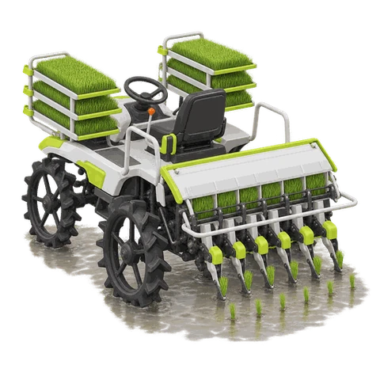
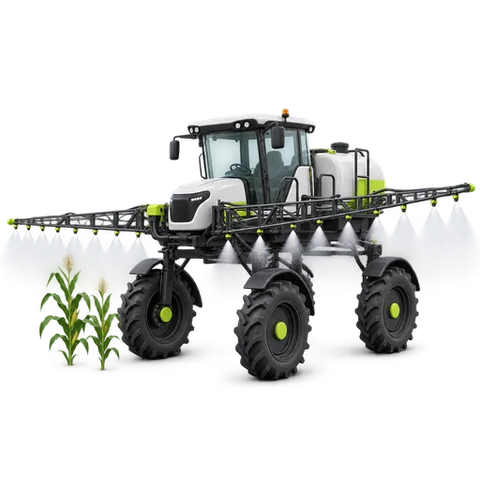

工业化节点工作流实证
实际项目节点图：人物三视图、道具与场景资产先建库，再跨集批量驱动分镜出图
实际项目节点图：人物三视图、道具与场景资产先建库，再跨集批量驱动分镜出图
在开拍前完成核心角色三视图与主场景定调，避免后期镜头光影跳跃
上线剧集《抄家前我携空间横扫全京城！》实拍感运镜与多景别连戏片段（静音循环预览）
点击或悬停任意节点，查看底层工程化约束逻辑
CommercialPromptWriter 通过多模型路由，将模糊商业文案拆解为焦段、景深、主辅光位与硬性主体保护约束，杜绝自由发挥导致的构图漂移。
同一台白蓝配色「1940 飞腾」篷车在冬日街景、暴雨校园接送与俯拍湿滑路面的 100% 工业结构一致性




手机拍照自动扫描矫正 → 异步多模型批改 → 错题知识图谱输出
内置边缘识别、蓝点微调与透视摆正增强，暗光拍歪也能输出清晰卷面。
采用“提交任务 + 轮询”突破小程序 60s 超时限制，与 Web 端共用推理管线。
自动定位每位学生错题并生成解析卡片，服务教师高效复盘与精准讲评。
04 / 04 · COMMERCIAL ARCHIVE
四年商业设计沉淀：覆盖高转化课程详情页与书籍装帧、实拍产品精修、跨境电商视觉及品牌网页动态呈现，确保创意能够高质量落地线下印刷与线上转化。
为心理教育课程与出版读物打造视觉主 KV、小鹅通长页、立体书籍宣传及节气主题插画。
承担整车实拍、光影精修、核心卖点提炼与终端门店推广物料排版延展。
通过生活场景渲染、结构尺码标注与面料微距特写，建立清晰的跨境卖点可视化表达。
展示首屏立体视觉、商品呈现节奏与交互动效录屏。
05 · RESUME & CONTACT
具备 4 年以上商业视觉全案经验与 3 年以上 AIGC 深度实战经验，擅长打通从创意视觉到自动化 AI 生产管线的商业闭环。
精通角色三视图设定、服化道与场景概念开发；擅长剧本拆解为动态分镜，统筹节奏剪辑、音效字幕与短剧破圈海报。
3 年 AI 深度实战，熟练运用 Midjourney、ComfyUI 搭建可控管线，结合 Claude Code、Codex、Coze 研发 Skill 与小程序。
精通品牌主视觉海报、高转化课程及电商详情长页、宣传折页、文创装帧及大型线下桁架/展板印前工艺落地。
具备商业产品摄影、多机位录制及活动导播实战经验；熟练剪映包装短视频，单篇小红书图文自然浏览破 10,000+。
 Photoshop视觉精修
Photoshop视觉精修 Cinema 4D三维视觉
Cinema 4D三维视觉 Claude Code工程与 Skill
Claude Code工程与 Skill Codex全栈开发
Codex全栈开发AIGC 视觉 · AI 短剧 · Agent 管线

4年+ 商业全案 · 3年+ AIGC · 短剧与 Agent 管线
PSC4DClaudeCodex